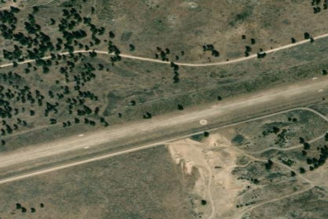

Smith Prairie, ID

Aerial imagery source: Esri, Vantor, Earthstar Geographics, and the GIS User Community
| Elevation | 4,958 ft |
|---|---|
| CTAF | 122.9 |
| Coordinates | 43.498501, -115.547997 |
Notes
[shortfield] Location Overview Smith Prairie Airstrip (2U0) sits about two miles southeast of the small community of Prairie, Idaho, at roughly 4,958 feet elevation, occupying roughly 39 acres of state land. The strip is owned and operated by the State of Idaho and sits in the high desert/forest transition country of the Boise National Forest area, not far from Anderson Ranch Reservoir and within reach of Mountain Home. Camping & Recreation The field is set up to welcome overnight visitors, with tiedowns, camping, and a toilet available on-site. The surrounding area offers strong outdoor recreation: nearby Anderson Ranch Reservoir offers fishing, and the area has over 380 miles of snowmobiling trails in winter, while visitors can also explore hiking and mountainous back-country trails, including the sand dunes at Bruneau Dunes State Park a bit farther afield. Dark, unspoiled night skies make it a favorite for stargazing campers. Notes & Warnings Smith Prairie's runway 06/24 is roughly 5,400 feet long and unpaved, and pilots should expect variable surface conditions depending on the season — recent pilot reports noted the east end of the runway dry with good dirt while the west end remained wet. Official guidance calls for a recommended landing on runway 06 and takeoff on runway 24 when wind conditions permit, though some references list this in reverse (land 05, takeoff 23), so pilots should check current conditions and NOTAMs before arrival. The field receives no winter maintenance, and the runway edges and thresholds are marked with white rocks rather than painted markings, typical of backcountry strips. As with most Idaho backcountry airstrips, density altitude, gusty mountain winds, and soft or uneven dirt surfaces are the primary hazards, and pilots unfamiliar with backcountry operations are encouraged to get a checkout before flying in. History Smith Prairie has long served as one of Idaho's classic backcountry airstrips, part of a network of state-maintained dirt fields that grew out of the early-to-mid 20th century era of backcountry aviation, when small planes became essential for accessing Idaho's remote high country for ranching, firefighting, mining, and recreation. Over the decades it became a well-known stop for Idaho's backcountry flying community, valued for its generous length compared to many primitive strips and its proximity to Anderson Ranch Reservoir. It remains actively maintained today by the Idaho Division of Aeronautics, which continues to monitor and report on field conditions for pilots, reflecting the state's long-standing commitment to preserving backcountry airstrip access for both recreational and utility flying.